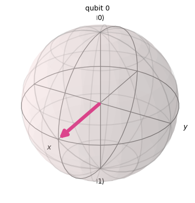
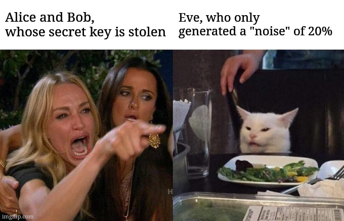

import numpy as np
import perceval as pcvlSolution Challenge 2: Quantum Woman-In-The-Middle Attack
0.1 Before we begin
Here are some utilities:
from perceval import pdisplay, PS, BS, Circuit, BasicState, Processor, StateVector
from perceval.backends import BackendFactory
from perceval.algorithm import Analyzer
from exqalibur import FockState
from qiskit.visualization import plot_bloch_multivector
from qiskit.quantum_info import Statevector
import matplotlib.pyplot as plt
from numpy import pi, cos, sin
from typing import Optional
# Let's go back to our rail encoding
qubits = {
"0": BasicState([1, 0]),
"1": BasicState([0, 1])
}
qubits_ = {qubits[k]: k for k in qubits}
sqlist = [qubits["0"], qubits["1"]]
# Circuit analysis
def analyze(circuit: Circuit, input_states: Optional[FockState] = None, output_states: Optional[FockState] = None) \
-> None:
if input_states is None:
input_states = sqlist
if output_states is None:
output_states = sqlist
p = Processor("Naive", circuit)
a = Analyzer(p, input_states, output_states, mapping=qubits_)
pdisplay(a)
# Circuit analysis by calculating the amplitudes
def amplitudes(circuit: Circuit, input_state: Optional[FockState] = None, output_states: Optional[FockState] = None) \
-> (complex, complex):
if input_state is None:
input_state = qubits["0"]
if output_states is None:
output_states = sqlist
b = BackendFactory.get_backend("Naive")
b.set_circuit(circuit)
b.set_input_state(input_state)
return {qubits_[k]: roundc(b.prob_amplitude(k)) for k in output_states}
# Display of the Bloch sphere
def circuit_to_state_vector(circuit: Circuit) -> Statevector:
ampl0, ampl1 = amplitudes(circuit)
return Statevector([ampl0, ampl1])
plot_bloch = lambda circuit : plot_bloch_multivector(circuit_to_state_vector(circuit))
# Rotations
x_rot = lambda x: Circuit(2) // (0, PS(pi)) // BS.Rx(theta=x) // (0, PS(pi))
y_rot = lambda x: BS.Ry(theta=x)
z_rot = lambda x: BS.H() // x_rot(x) // BS.H()
# Trigonometry with Matplotlib
def plot_trig(angles, colors=None, annotations=None):
r = 1.5
if colors is None:
colors = ["blue"] * len(angles)
if annotations is None:
annotations = [""] * len(angles)
for angle, color, annotation in zip(angles, colors, annotations):
pos_x = r * cos(angle)
pos_y = r * sin(angle)
plt.plot([0, pos_x], [0, pos_y], color=color)
pos_x_a = pos_x + np.sign(pos_x) * 0.1 - (0.05 * len(annotation) if np.sign(pos_x) < 0 else 0)
pos_y_a = pos_y + np.sign(pos_y) * 0.1
plt.gca().annotate(annotation, xy=(pos_x_a, pos_y_a), xycoords='data', fontsize=10)
plt.plot(0, 0, color='black', marker='o')
a = np.linspace(0 * pi, 2 * pi, 100)
xs, ys = r * cos(a), r * sin(a)
plt.plot(xs, ys, color="black")
plt.xlim(-2, 2)
plt.ylim(-2, 2)
plt.gca().set_aspect('equal')
plt.show()
# Version of `round()` for complex numbers
def roundc(c: complex, decimals: int = 2) -> complex:
return round(c.real, decimals) + round(c.imag, decimals) * 1j0.1.1 Examples
hadamard_gate = BS.H()
print(amplitudes(hadamard_gate))
analyze(hadamard_gate)
plot_bloch(hadamard_gate){'0': (0.71+0j), '1': (0.71+0j)}| 0 | 1 | |
|---|---|---|
| 0 | 1/2 | 1/2 |
| 1 | 1/2 | 1/2 |

Not only the Bloch sphere can be used to represent qubits, we can simply use a trigonometric circle. The transition is explicit: the abscissa corresponds to \(|0\rangle\) and the ordinate to \(|1\rangle\), so \(|+\rangle\) is at \(\frac{\pi}{4}\). All states are on the circle, as the sum of probabilities, which here is an amplitude, is always \(1\). However, with this display, we lose information about the global phase.
For example, here are the canonical basis (in blue) and the Hadamard basis (in red):
plot_trig([0, pi/2, pi/4, -pi/4], ["blue", "blue", "red", "red"], ["|0>", "|1>", "|+>", "|->"])
For this challenge, as we don’t need phase but want to visualize multiple bases at the same time, we will use only the representation with the trigonometric circle.
1 Woman in the middle?
You all know the classic Man-In-The-Middle attack, where an attacker intercepts communication between two entities who are unaware that their conversation is being eavesdropped. Today, I propose you to discover the quantum version! Alice and Bob (yes, them again, even physicists are fans) decide to exchange a secret key using the BB84 protocol. Being confident in the reliability of their protocol, they tolerate some noise. However, Eve manages to intercept the communication channel. Will she succeed in going unnoticed?

1.1 BB84 Protocol: Normal Usage
The BB84 protocol allows the exchange of a key of \(n\) bits with \(4n\) qubits. It is based on the principle that if someone were to eavesdrop on the conversation, that person would be forced to measure the qubits, thus collapsing the associated wave functions (a measurement is a projection and thus a loss of information). This collapse is thus visible, introducing a \(25\%\) error rate during the verification step.
1.1.1 Step 1: Alice prepares her qubits to send
1.a) First, a key is needed, for which a random binary string of size \(4n\) is generated.
It is possible to generate this string using a quantum computer for better quality randomness.
N = 100
bits_alice = np.random.randint(low=0, high=2, size=(4 * N,))1.b) Alice will then choose \(4n\) random bases from \({+, \times}\), in which she will encode her qubits. (Please excuse the confusion between the \(+\) basis and the \(|+\rangle\) state, which are not related; I am following the same conventions as the literature).
The + basis is the canonical basis:
\[ + = \left\{ \begin{pmatrix} 1 \\ 0 \end{pmatrix}, \begin{pmatrix} 0 \\ 1 \end{pmatrix}\right\} \]
While the × basis is defined by:
\[ \times = \left\{\frac{1}{\sqrt{2}}\begin{pmatrix} 1 \\ 1 \end{pmatrix}, \frac{1}{\sqrt{2}}\begin{pmatrix} -1 \\ 1 \end{pmatrix}\right\} \]
We can visualize them:
plot_trig([0, pi/2, pi/4, 3*pi/4], ["blue", "blue", "red", "red"], ["0 (+)", "1 (+)", "0 (x)", "1 (x)"])The encoding is fully represented in this diagram: \(1\) in the \(\times\) basis will be encoded as: \[ -\frac{\sqrt{2}}{2} \begin{pmatrix} 1 \\ 0 \end{pmatrix} + \frac{\sqrt{2}}{2} \begin{pmatrix} 0 \\ 1 \end{pmatrix} = -\frac{1}{\sqrt{2}} |0\rangle + \frac{1}{\sqrt{2}} |1\rangle \]
As a reminder, with the rail encoding we saw earlier, this becomes: \[ -\frac{1}{\sqrt{2}} |1, 0\rangle\rangle + \frac{1}{\sqrt{2}} |0, 1\rangle\rangle \] We use this notation for Fock states (the rails), to avoid confusion with the multi-state \(|10\rangle\) that we will discover later.
No matter what name we give to our basis vectors, here the canonical one, it obviously doesn’t change the calculations. I haven’t specified it, but (almost) everything done in the context of this competition is reproducible on quantum computers with different technologies. You just need to adapt the qubit encoding, the calculations remain the same.
bases_alice = np.array(["+" if b == 0 else "x" for b in np.random.randint(low=0, high=2, size=(4 * N,))])1.c) Alice can now encode her \(4n\) qubits in her \(4n\) bases. I use StateVector, which is a generalization of BasicState we encountered. This allows me to perform operations on the states more easily, without worrying about normalization, which is done automatically.
>> Be careful with StateVectors, they can be tricky, 3 * a + b works, while a + 3 * b does not! Also, beware of confusion between Qiskit’s Statevector and Perceval’s StateVector, we use both…
qubits_alice = []
# To test more easily, I define the values of 0 and 1 in the X basis, be careful, these are no longer
# BasicState, but StateVector, so you need to use the measure function (see below) to manipulate them
qubits["0x"] = qubits["0"] + qubits["1"]
qubits["1x"] = qubits["1"] - qubits["0"]
print(type(qubits["0"]), type(qubits["0x"]))
for bit, basis in zip(bits_alice, bases_alice):
if basis == "+":
s = pcvl.StateVector(qubits["0"]) if bit == 0 else pcvl.StateVector(qubits["1"])
else:
s = qubits["0x"] if bit == 0 else qubits["1x"]
qubits_alice.append(s)
# Displaying the first 9 to verify:
if len(qubits_alice) < 10:
print(f"Bit à encoder : {bit}, base choisie : {basis}, qubit correspondant : {s}")<class 'exqalibur.FockState'> <class 'exqalibur.StateVector'>
Bit à encoder : 0, base choisie : +, qubit correspondant : |1,0>
Bit à encoder : 0, base choisie : +, qubit correspondant : |1,0>
Bit à encoder : 1, base choisie : +, qubit correspondant : |0,1>
Bit à encoder : 1, base choisie : x, qubit correspondant : -sqrt(2)/2*|1,0>+sqrt(2)/2*|0,1>
Bit à encoder : 0, base choisie : x, qubit correspondant : sqrt(2)/2*|0,1>+sqrt(2)/2*|1,0>
Bit à encoder : 1, base choisie : +, qubit correspondant : |0,1>
Bit à encoder : 1, base choisie : +, qubit correspondant : |0,1>
Bit à encoder : 1, base choisie : x, qubit correspondant : -sqrt(2)/2*|1,0>+sqrt(2)/2*|0,1>
Bit à encoder : 0, base choisie : +, qubit correspondant : |1,0>Now that Alice has prepared her qubits, she can send them to Bob. For example, using a photon.
1.1.2 Step 2: Retrieval by Bob and Decoding
Bob does not know the bases in which the qubits were encoded, so he will randomly choose \(4n\) bases like Alice, and will measure Alice’s qubits. Only half of the bits will be correct, as he has a fifty-fifty chance each time of choosing the same basis as Alice.
Once he has measured the photons, they have collapsed, and no one can have them anymore. This is an important concept to understand. In the classical world, we can send a message while keeping a version of its content on our side; it’s not as if every message we send is erased from our phone and memory. In the quantum world, however, this is the case! There is even a dedicated theorem: the no-cloning theorem. We cannot take an arbitrary unknown quantum state and have a device that returns two copies of that state. This is obviously very practical in the cyber world. We can take actions after measurement with guarantees.
2.a) Bob randomly chooses \(4n\) bases:
bases_bob = np.array(["+" if b == 0 else "x" for b in np.random.randint(low=0, high=2, size=(4*N,))])To simulate a measurement, we will use the “SLOS” processor:
def measure(input_state, circuit, full=False):
p = pcvl.Processor("SLOS", circuit)
p.with_input(input_state)
sampler = pcvl.algorithm.Sampler(p)
# Complete measurement made with 1000 attempts, so we end up with a result similar to the
# Analyzer.
if full:
sample_count = sampler.sample_count(1000)
return sample_count['results']
sample_count = sampler.sample_count(1)
return list(sample_count['results'].keys())[0]2.b) Bob prepares the circuits necessary for these measurements.
To measure in the \(+\) basis, it is sufficient to take the identity since it is our canonical basis:
base_p = Circuit(2)One can verify:
print(f"""
0 dans la base + : {measure(qubits["0"], base_p, full=True)}
1 dans la base + : {measure(qubits["1"], base_p, full=True)}
0 dans la base x ({qubits["0x"]}) mesurée dans la base + : {measure(qubits["0x"], base_p, full=True)}
1 dans la base x ({qubits["1x"]}) mesurée dans la base + : {measure(qubits["1x"], base_p, full=True)}
""")
0 dans la base + : {
|1,0>: 1000
}
1 dans la base + : {
|0,1>: 1000
}
0 dans la base x (sqrt(2)/2*|0,1>+sqrt(2)/2*|1,0>) mesurée dans la base + : {
|1,0>: 486
|0,1>: 514
}
1 dans la base x (-sqrt(2)/2*|1,0>+sqrt(2)/2*|0,1>) mesurée dans la base + : {
|0,1>: 505
|1,0>: 495
}As expected, there’s no way to determine Alice’s bit if Bob chooses the wrong base. We do the same for the x base. This time, we use a rotation of \(-\frac{\pi}{4}\) (transition from the x base to our canonical base). I use a rotation \(y\) with an angle of \(-\frac{\pi}{2}\) for this, due to differences in conventions between the Bloch sphere and our trigonometric circle.
base_x = y_rot(-pi/2)
print(f"""
0 in the x base: {measure(qubits["0x"], base_x, full=True)}
1 in the x base: {measure(qubits["1x"], base_x, full=True)}
0 in the + base ({qubits["0"]}) measured in the x base: {measure(qubits["0"], base_x, full=True)}
1 in the + base ({qubits["1"]}) measured in the x base: {measure(qubits["1"], base_x, full=True)}
""")2.c) Bob measures the qubits sent by Alice in his bases.
bits_bob = []
for q, b in zip(qubits_alice, bases_bob):
if b == "+":
bits_bob.append(0 if measure(q, base_p) == qubits["0"] else 1)
else:
bits_bob.append(0 if measure(q, base_x) == qubits["0"] else 1)
bits_bob = np.array(bits_bob)On peut calculer la correspondance avec la clef d’Alice :
correspondance_secret_key_bits_bob = bits_bob == bits_alice
np.sum(correspondance_secret_key_bits_bob) / (4 * N)0.76We have approximately \(\sim 75%\) equivalence: in \(50%\) of the cases, Alice and Bob have the same basis, hence the same values. There is an additional \(25%\) because when they do not have the same basis, there is a \(50%\) success rate.
1.1.3 Step 3: Alice and Bob agree.
Once the qubits have been measured by Bob, Bob will make his bases public, and Alice will then tell him where there is a match, and therefore where they can be sure to have the same values.
correspondance_bases_alice_bob = bases_bob == bases_alice
half_bits_bob = bits_bob[correspondance_bases_alice_bob]
half_bits_alice = bits_alice[correspondance_bases_alice_bob]
# CAUTION: Do not rerun this cell alone; rerun the entire notebook to refresh this cell correctly.1.1.4 Step 4: Verification of communication integrity.
To verify that there has been no eavesdropping, Alice and Bob will make half of their common key public. If there is a total match, then we are sure that no one has eavesdropped.
last_slice = len(half_bits_bob) // 2
verification = half_bits_bob[:last_slice] == half_bits_alice[:last_slice]
print(f"Match percentage: {int(np.sum(verification) / last_slice * 100)}%")Pourcentage de correspondance : 100%Hence, in fine, the secret key has a length approximately equal to \(n\) (One can find an \(n'\) such that the probability of having \(|key| > n\) is arbitrarily large, then cut it to \(n\)):
secret_key = half_bits_bob[last_slice:]
print(f"Secret key: {secret_key}, length: {len(secret_key)}")Secret key : [0 1 1 0 0 0 0 0 0 1 1 1 1 1 0 0 0 1 1 0 0 0 0 0 1 0 0 1 1 1 0 1 0 0 0 0 1
1 1 1 1 0 0 1 0 1 0 0 0 0 0 0 0 0 0 1 0 0 1 1 1 0 1 1 0 1 1 0 1 1 0 1 1 1
0 0 1 1 0 1 0 0 0 1 1 0 1 1 1 1 0 0 0 1 0 0 1], taille : 971.2 Protocol BB84: Eve enters the scene
Everything is identical, except now Eve intercepts the communication and tries to deduce part of the exchanged key.
1.2.1 Step 1: Re-implement the protocol by adding Eve in the middle (this step is not necessary to obtain the flag, but recommended to facilitate the rest)
Eve first uses the same strategy as Bob and Alice. She pretends to be Bob and then Alice, performing the same encoding/decoding actions.
N = 100
# Alice prepares her qubits.
bits_alice = np.random.randint(low=0, high=2, size=(4 * N,))
bases_alice = np.array(["+" if b == 0 else "x" for b in np.random.randint(low=0, high=2, size=(4 * N,))])
qubits_alice = []
for bit, basis in zip(bits_alice, bases_alice):
if basis == "+":
s = pcvl.StateVector(qubits["0"]) if bit == 0 else pcvl.StateVector(qubits["1"])
else:
s = qubits["0x"] if bit == 0 else qubits["1x"]
qubits_alice.append(s)
# Eve intercepts them and applies the same method as Bob, pretending to be him.
bases_eve = np.array(["+" if b == 0 else "x" for b in np.random.randint(low=0, high=2, size=(4 * N,))])
bits_eve = []
for q, b in zip(qubits_alice, bases_eve):
if b == "+":
bits_eve.append(0 if measure(q, base_p) == qubits["0"] else 1)
else:
bits_eve.append(0 if measure(q, base_x) == qubits["0"] else 1)
bits_eve = np.array(bits_eve)
# She then sends the corresponding qubits to pretend to be Alice.
qubits_eve = []
for bit, basis in zip(bits_eve, bases_eve):
if basis == "+":
s = pcvl.StateVector(qubits["0"]) if bit == 0 else pcvl.StateVector(qubits["1"])
else:
s = qubits["0x"] if bit == 0 else qubits["1x"]
qubits_eve.append(s)
# Bob receives the qubits from Eve and applies the same methods as before.
bases_bob = np.array(["+" if b == 0 else "x" for b in np.random.randint(low=0, high=2, size=(4 * N,))])
bits_bob = []
for q, b in zip(qubits_eve, bases_bob):
if b == "+":
bits_bob.append(0 if measure(q, base_p) == qubits["0"] else 1)
else:
bits_bob.append(0 if measure(q, base_x) == qubits["0"] else 1)
bits_bob = np.array(bits_bob)
# Final step: sharing the results.
correspondance_bases_alice_bob = bases_bob == bases_alice
half_bits_alice = bits_alice[correspondance_bases_alice_bob]
half_bits_bob = bits_bob[correspondance_bases_alice_bob]
last_slice = len(half_bits_alice) // 2
# Verification of proper execution.
verification = half_bits_alice[:last_slice] == half_bits_bob[:last_slice]
correspondance_percentage = int(np.sum(verification) / last_slice * 100)
print(f"Match percentage: {correspondance_percentage}%, error of: {100 - correspondance_percentage}%.")
secret_key_step_1 = half_bits_bob[:last_slice]Pourcentage de correspondance : 68%, d'où une erreur de 32%.By performing the calculations, it is shown that the error rate averages \(25\%\). By exchanging a large number of bits, we approach this average, thereby detecting eavesdropping.
print(secret_key_step_1)[0 0 0 0 1 1 1 1 0 1 1 1 0 0 1 0 1 0 1 1 0 1 0 0 0 0 1 1 0 0 1 0 0 0 1 1 1
1 0 1 0 1 0 1 1 0 1 1 0 1 1 1 1 0 1 1 0 0 0 0 1 0 0 0 1 1 0 1 1 0 0 1 1 1
1 1 1 0 1 1 0 1 0 1 1 1 1 0 1 1 1 0 1]It’s not exactly the key yet; error correction codes will still be needed for Alice and Bob to end up with the same key. For the purposes of this challenge, we will stop here.
In this case, Eve gets detected. However, it’s possible to reduce the error, albeit slightly, to make it appear as noise. Let’s simplify by assuming that an error rate below \(20\%\) is considered as noise.
1.2.2 Step 2: Eve counterattacks, find a way to bring down the average error rate to \(20\%\) (or below).
The protocol remains the same; the only adjustable parameters are the measurement bases to measure Alice’s qubits and the qubits to send to Bob. The matching percentage should be above \(79\) for \(N = 5000\) to pass the tests.
Solution:
To increase accuracy when capturing and sending back qubits, Eve can use the Breidbart basis. Detailed explanations are provided, for example, in the paper A new attack strategy for BB94 protocol based on Beidbart basis.
The intuition behind this choice of basis is that while mistakes will still be made each time, they will be “less” severe.
plot_trig([0, pi/2, pi/4, 3*pi/4, pi/8, 5*pi/8], ["blue", "blue", "red", "red", "green", "green"], ["0 (+)", "1 (+)", "0 (x)", "1 (x)", "0 (b)", "1 (b)"])# Breidbart's qubits can be defined by:
qubits["0b"] = pcvl.StateVector(qubits["0"]) + qubits["0x"]
qubits["1b"] = pcvl.StateVector(qubits["1"]) + qubits["1x"]
# And the Breidbart's basis:
base_b = y_rot(-pi/4)
# One can verify with:
print(f"""
0 in base b: {measure(qubits["0b"], base_b, full=True)}
1 in base b: {measure(qubits["1b"], base_b, full=True)}
0 in base + ({qubits["0"]}) measured in base b: {measure(qubits["0"], base_b, full=True)}
1 in base + ({qubits["1"]}) measured in base b: {measure(qubits["1"], base_b, full=True)}
0 in base x ({qubits["0x"]}) measured in base b: {measure(qubits["0x"], base_b, full=True)}
1 in base x ({qubits["1x"]}) measured in base b: {measure(qubits["1x"], base_b, full=True)}
""")
0 dans la base b : {
|1,0>: 1000
}
1 dans la base b : {
|0,1>: 1000
}
0 dans la base + (|1,0>) mesurée dans la base b : {
|1,0>: 865
|0,1>: 135
}
1 dans la base + (|0,1>) mesurée dans la base b : {
|1,0>: 169
|0,1>: 831
}
0 dans la base x (sqrt(2)/2*|0,1>+sqrt(2)/2*|1,0>) mesurée dans la base b : {
|1,0>: 838
|0,1>: 162
}
1 dans la base x (-sqrt(2)/2*|1,0>+sqrt(2)/2*|0,1>) mesurée dans la base b : {
|1,0>: 150
|0,1>: 850
}N = 1000
# Alice prepares her qubits.
bits_alice = np.random.randint(low=0, high=2, size=(4 * N,))
bases_alice = np.array(["+" if b == 0 else "x" for b in np.random.randint(low=0, high=2, size=(4 * N,))])
qubits_alice = []
for bit, basis in zip(bits_alice, bases_alice):
if basis == "+":
s = pcvl.StateVector(qubits["0"]) if bit == 0 else pcvl.StateVector(qubits["1"])
else:
s = qubits["0x"] if bit == 0 else qubits["1x"]
qubits_alice.append(s)
# Intercepting...
bits_eve = np.array([0 if measure(q, base_b) == qubits["0"] else 1 for q in qubits_alice])
# Sending...
qubits_eve = []
for b in bits_eve:
if b == 0:
qubits_eve.append(qubits["0b"])
else:
qubits_eve.append(qubits["1b"])
# Bob receives the qubits from Eve and applies the same methods as before.
bases_bob = np.array(["+" if b == 0 else "x" for b in np.random.randint(low=0, high=2, size=(4 * N,))])
bits_bob = []
for q, b in zip(qubits_eve, bases_bob):
if b == "+":
bits_bob.append(0 if measure(q, base_p) == qubits["0"] else 1)
else:
bits_bob.append(0 if measure(q, base_x) == qubits["0"] else 1)
bits_bob = np.array(bits_bob)
# Final step: sharing the results.
correspondance_bases_alice_bob = bases_bob == bases_alice
half_bits_alice = bits_alice[correspondance_bases_alice_bob]
half_bits_bob = bits_bob[correspondance_bases_alice_bob]
last_slice = len(half_bits_alice) // 2
# Verification of proper execution.
verification = half_bits_alice[:last_slice] == half_bits_bob[:last_slice]
correspondance_percentage = int(np.sum(verification) / last_slice * 100)
print(f"Match percentage: {correspondance_percentage}%, error of: {100 - correspondance_percentage}%.")
secret_key_step_1 = half_bits_bob[:last_slice]Pourcentage de correspondance : 80%, d'où une erreur de 20%.1.3 Flag Recovery
The day I manage to get pcvl.random_seed(66) to work, I will ask you for the keys. In the meantime, I would like the two bases used in step 2, as well as the two types of qubits sent by Eve.
Feel free to DM me if you encounter any issues (sckathach on Discord).
import requests as rq
def circuit_to_list(circuit: Circuit) -> List[List[Tuple[float, float]]]:
return [[(x.real, x.imag) for x in l] for l in np.array(circuit.compute_unitary())]
def state_vector_to_list(sv: StateVector) -> List[Tuple[float, float]]:
if type(sv) is not StateVector:
sv = pcvl.StateVector(sv)
sv.normalize()
r = [(0., 0.), (0., 0.)]
for k, v in sv:
r[int(qubits_[k])] = (v.real, v.imag)
return r
def list_to_state_vector(p: List[Tuple[float, float]]) -> StateVector:
return complex(p[0][0], p[0][1]) * StateVector([1, 0]) + complex(p[1][0], p[1][1]) * StateVector([0, 1]) # Example with the protocol of step one:
# example_base_eve_1 = base_p
# example_base_eve_2 = base_x
# example_qubit_eve_1 = qubits["0"]
# example_qubit_eve_2 = qubits["1"]
# example_qubit_eve_3 = qubits["0x"]
# example_qubit_eve_4 = qubits["1x"]
d = {
"base_eve_1": circuit_to_list(base_b),
"base_eve_2": circuit_to_list(base_b),
"qubit_eve_1": state_vector_to_list(qubits["0b"]),
"qubit_eve_2": state_vector_to_list(qubits["1b"]),
"qubit_eve_3": state_vector_to_list(qubits["0b"]),
"qubit_eve_4": state_vector_to_list(qubits["1b"])
}
# raise NotImplementedErrorURL = "http://localhost:8000"
rq.get(URL + "/healthcheck").json(){'message': 'Statut : en pleine forme !'}rq.post(URL + "/challenges/2", json=d).json(){'message': 'GG ! Voici le drapeau : 404CTF{m0Y3nN3m3Nt_d1sCR3t_t0ut_d3_M3m3}'}m0Y3nN3m3Nt_d1sCR3t_t0ut_d3_M3m3, Moyennement discret tout de même means Moderately discreet though…